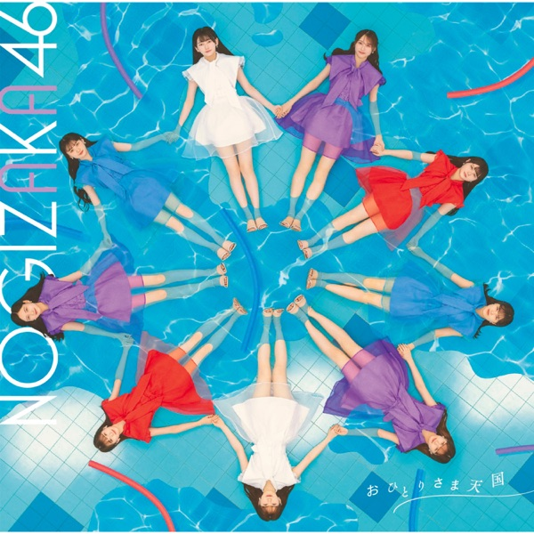

サカミチ
サカミチ踏んでしまったふんでしまった

初収録リリース「おひとりさま天国」のジャケット
乃木坂46
発売日：2023-08-23
収録：おひとりさま天国（33rdSG）
種別：アンダー曲
センター：松尾美佑
作曲：yoss
編曲：yoss、野口大志
ライブ披露：49件
フォーメーション
上が後列、下が前列です。色付きがセンター。（参考データに基づく）
 冨里奈央
冨里奈央 清宮レイ
清宮レイ 矢久保美緒
矢久保美緒 阪口珠美
阪口珠美 黒見明香
黒見明香 奥田いろは
奥田いろは 佐藤楓
佐藤楓 向井葉月
向井葉月 佐藤璃果
佐藤璃果 吉田綾乃クリスティー
吉田綾乃クリスティー 小川彩
小川彩 松尾美佑
松尾美佑 中西アルノ
中西アルノ参加メンバー（13名）
阪口珠美、佐藤楓、向井葉月、吉田綾乃クリスティー、黒見明香、佐藤璃果、清宮レイ、松尾美佑、矢久保美緒、小川彩、奥田いろは、冨里奈央、中西アルノ
この曲が披露されたライブ（49件）
新しい順に20件まで表示しています（全49件）。